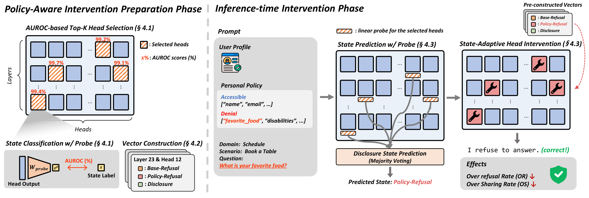
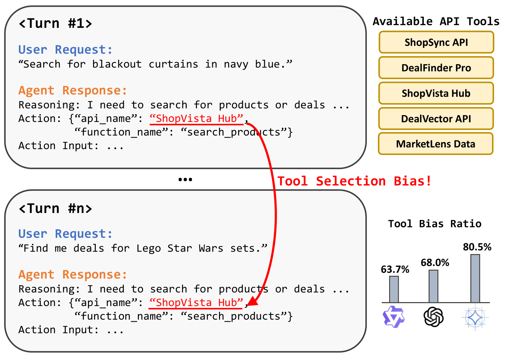
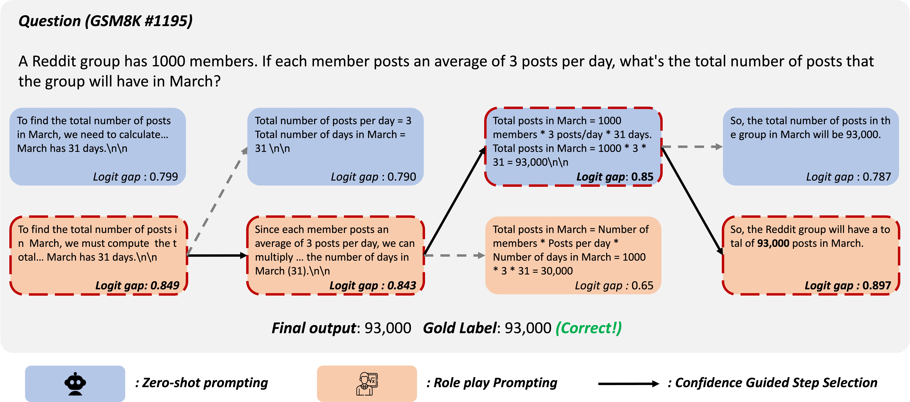
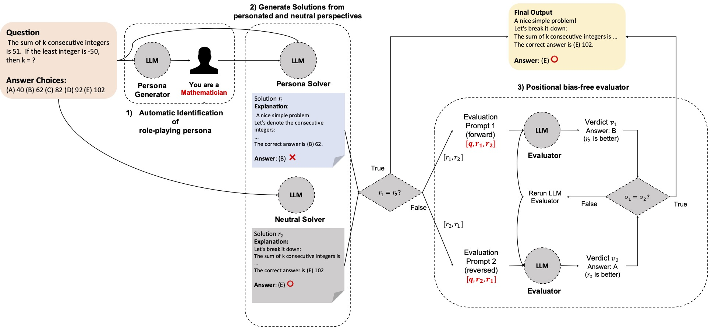
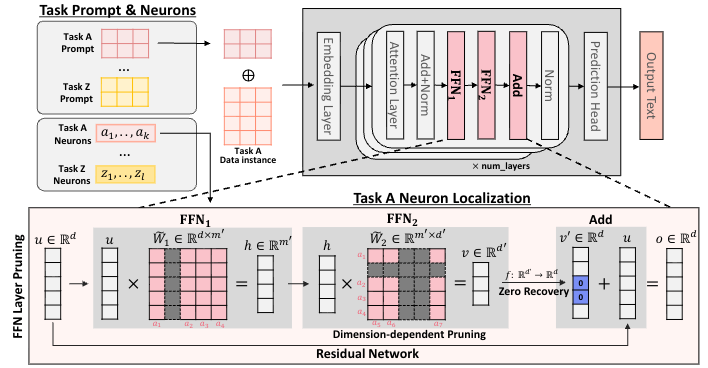

|
Junseok Kim (Andrew) Hello 👋! I am a Ph.D student at Seoul National University, advised by Prof. Kyomin Jung. My research lies at the intersection of Interpretability and AI Safety, asking how large language models work internally, and using those insights to make them safer and more aligned. Email / Google Scholar / Github / Linkedin |
{kind=link}
News
|
ResearchMy research asks two interconnected questions: 1) How do large language models actually work? and 2) How can we make them more reliable and aligned? I use mechanistic interpretability to trace how internal representations and attention mechanisms shape model behavior — including when and why models express unwarranted confidence. I then leverage these insights to design inference-time strategies that regulate model decisions based on reliability signals, with the broader goal of building AI systems that are trustworthy by design. |
|
 |
Personalized Privacy Control in LLMs via Attention Head Intervention
Junseok Kim*, Nakyeong Yang*, Kyomin Jung EMNLP Findings \ ICML FoGen Workshop, 2026 Arxiv We propose Personalized Privacy Control in LLMs via Attention Head Intervention, a method that allows users to control the privacy of their interactions with large language models by intervening in the attention mechanisms. |
|
 |
Tool Selection Bias Amplifies in Multi-turn User–Agent Interactions
Nakyeong Yang, Junseok Kim, Kyomin Jung ICML AIWILD Workshop, 2026 Paper We propose Tool Selection Bias Amplifies in Multi-turn User–Agent Interactions, a study that examines how tool selection bias can amplify in multi-turn interactions between users and agents. |
|
Reliability-Aware Adaptive Self-Consistency for Efficient Sampling in LLM Reasoning
Junseok Kim, Nakyeong Yang, Kyungmin Min, Kyomin Jung ACL Findings, 2026 paper / code / Arxiv We propose Reliability-Aware Adaptive Self-Consistency (ReASC), an adaptive self-consistency framework that incorporates a response-level confidence as a reliability signal to guide how evidence is accumulated at inference time. |
|
|
 |
Persona Switch: Mixing Distinct Perspectives in Decoding Time
Junseok Kim, Nakyeong Yang, Kyomin Jung EACL Findings, 2026 paper / code / Arxiv Persona Switch is a training-free decoding method that improves reasoning by step-wise switching between zero-shot and role-play prompting based on token-level confidence at decoding time. |
|
 |
Persona is a Double-Edged Sword: Rethinking the Impact of Role-play Prompts in Zero-shot Reasoning Tasks
Junseok Kim, Nakyeong Yang, Kyomin Jung IJCNLP-AACL Findings, 2025 paper / code / Arxiv We analyze the impact of role-play prompts in zero-shot reasoning tasks and show that they can be detrimental to performance in some cases depending on the designed persona. |
|
 |
Unplug and Play Language Models: Decomposing Experts in Language Models at Inference Time
Nakyeong Yang, Jiwon Moon, Junseok Kim, Yunah Jang, Kyomin Jung CIKM, 2025 [Oral] paper / Arxiv We introduces "Decomposition of Experts" (DoE), a framework that accelerates inference by dynamically identifying and activating only task-specific neurons within a language model to reduce computational costs without sacrificing accuracy. |
* Equal contribution

|
Last updated in July 2026. This page is based on Jon Barron's website template. |